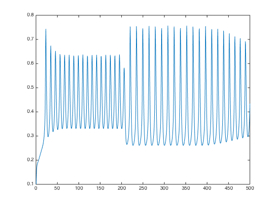
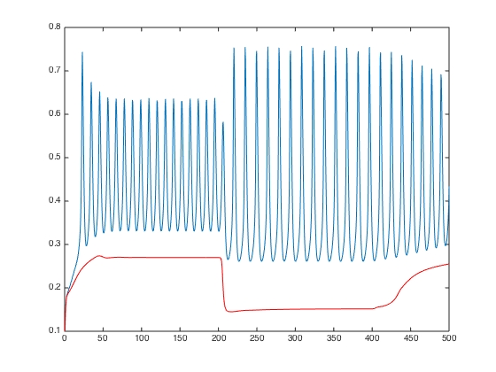
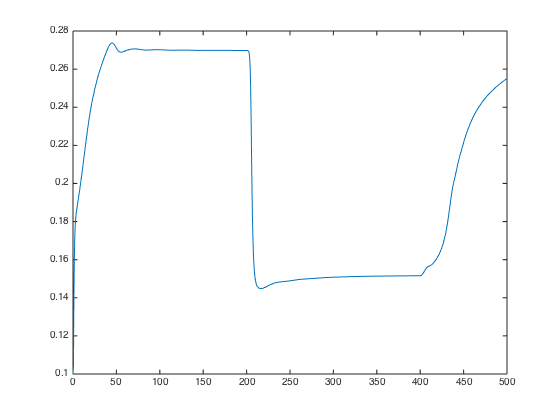
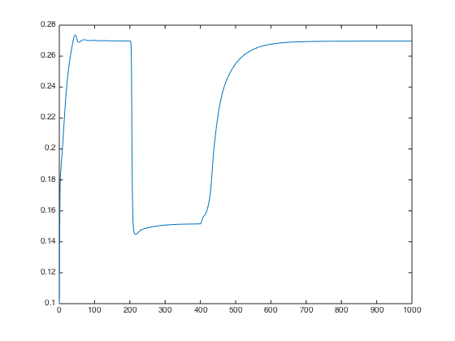

Demonstration script for new NVU model
Contents
Construct NVU
The NVU consists of a number of submodules, implemented as MATLAB classes, presently an astrocyte, a lumped SMC/EC model, and a model of the wall mechanics. The parameters of each of these submodules are specified when the modules are constructed, here in the call to NVU
NVU is the glue that binds the modules together.
% Default tolerances work just fine odeopts = odeset('Vectorized', 1); nv = NVU(Astrocyte(), ... WallMechanics(), ... SMCEC('J_PLC', 0.4), ... 'odeopts', odeopts); % The different modules are nv.smcec nv.astrocyte nv.wall
ans =
SMCEC with properties:
params: [1x1 struct]
u0: [10x1 double]
index: [1x1 struct]
n_out: 33
idx_out: [1x1 struct]
ans =
Astrocyte with properties:
params: [1x1 struct]
u0: [15x1 double]
index: [1x1 struct]
n_out: 5
idx_out: [1x1 struct]
ans =
WallMechanics with properties:
params: [1x1 struct]
u0: [4x1 double]
index: [1x1 struct]
n_out: 2
idx_out: [1x1 struct]
Run a basic simulation and plot some things
Run simulation
nv.simulate() % To get a list of the things you can retrieve as output for a particular % module, do the following: nv.astrocyte.varnames() % Plot, e.g. Ca_i plot(nv.T, nv.out('Ca_i'))
Elapsed time is 9.750751 seconds.
ans =
'R_k'
'K_p'
'N_Na_k'
'N_K_k'
'N_Cl_k'
'N_HCO3_k'
'N_Na_s'
'N_K_s'
'N_HCO3_s'
'w_k'
'i_k'
'c_k'
'h_k'
's_k'
'eet_k'
'ft'
'v_k'
'J_BK_k'
'K_s'
'K_p'
 Recreate the wall plot from previous code
subplot(3, 2, 1) plot(nv.T, nv.out('M')) xlabel('Time') ylabel('Fraction [-]') title('[M]') subplot(3, 2, 2) plot(nv.T, nv.out('Mp')) xlabel('Time') ylabel('Fraction [-]') title('[Mp]') subplot(3, 2, 3) plot(nv.T, nv.out('AMp')) xlabel('Time') ylabel('Fraction [-]') title('[AMp]') subplot(3, 2, 4) plot(nv.T, nv.out('AM')) xlabel('Time') ylabel('Fraction [-]') title('[AM]') subplot(3, 2, 5) plot(nv.T, nv.out('F_r')) xlabel('Time') ylabel('Fraction [-]') title('F_r') subplot(3, 2, 6) plot(nv.T, nv.out('R')) xlabel('Time') ylabel('\mu m') title('[Radius]')
Now adjust a parameter, and run again
% Adjust a parameter nv.smcec.params.J_PLC = 0.18; nv.simulate() plot(nv.T, nv.out('Ca_i'))
Elapsed time is 1.996343 seconds.
Now run for a bit longer
nv.T = linspace(0, 1000, 2000);
nv.simulate();
clf
plot(nv.T, nv.out('Ca_i'))
Elapsed time is 2.141654 seconds.